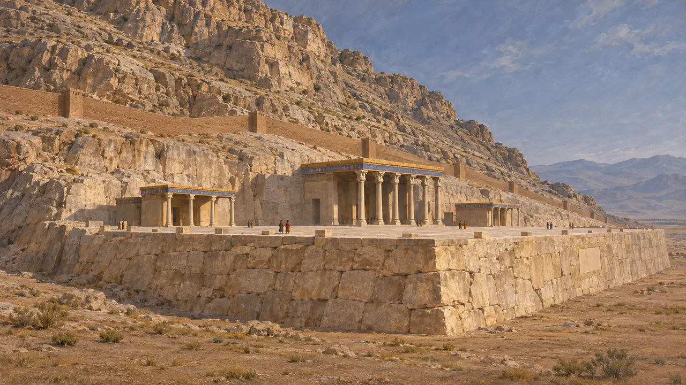
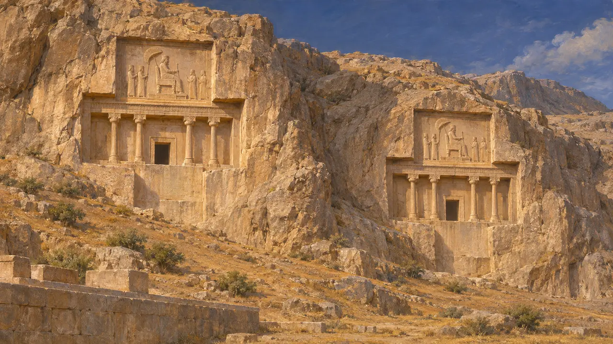
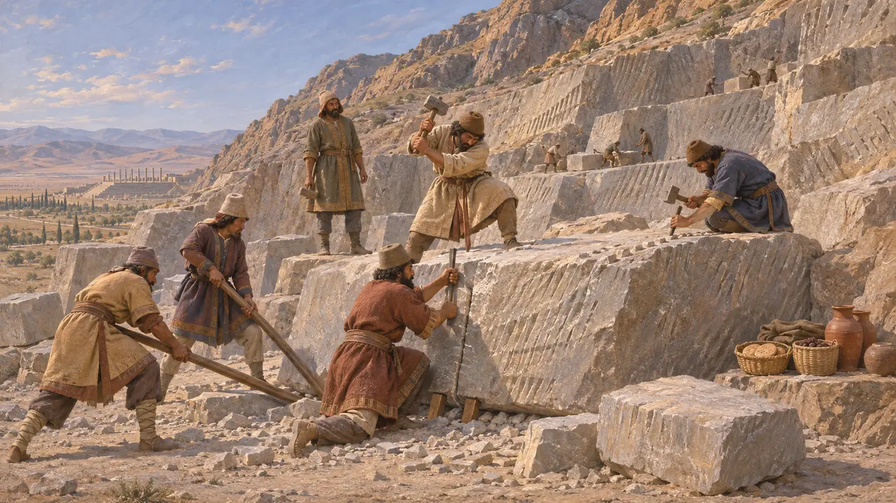
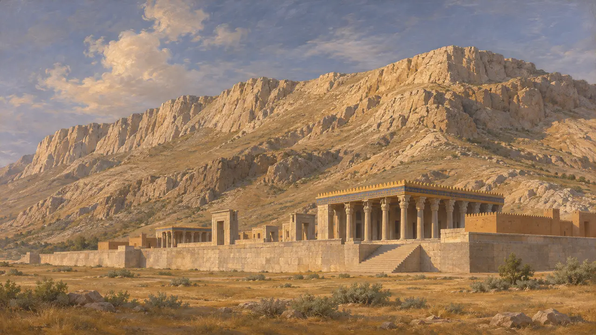

자비의 산
쿠에 라흐마트, 페르세폴리스 기단 뒤의 산, 기원전 518년경부터
자비의 산, 페르시아어로 쿠에 라흐마트는 마르브다슈트 평원에서 페르세폴리스 기단 뒤로 솟은 능선이다. 다리우스는 기원전 518년경 궁전 기단을 그 기슭에 기대어 쌓았고, 후대 왕들은 그 산비탈에 무덤을 팠다. 이 이름은 근대의 것이며 고대 이름은 알려져 있지 않다.
게임에서: 파르사 단계는 자비의 산 아래 세워진다. 왕의 기단은 이 산을 등지고 놓이며, 그 채석장은 산의 바위에 닿아야 한다.


왕릉
당대 기록기단 위쪽 산에 있는 두 암굴묘는 나크셰 로스탐의 것과 비슷한 정면을 지녔으며, 보통 기원전 4세기의 아르타크세르크세스 2세와 3세의 것으로 본다. 다리우스와 그 뒤의 왕들은 몇 킬로미터 북쪽의 나크셰 로스탐에 묻혔다.
E. F. Schmidt, Persepolis 3, 1970

공사에 쓴 돌
당대 기록산과 근처 언덕의 채석장이 기단과 궁전들의 회색 석회암을 대었다. 마무리하지 못한 돌덩이와 연장 자국이 남은 채석면이 남아 있고, 요새 점토판은 왕실 창고에서 식량을 받은 일꾼 무리를 기록한다.
Persepolis Fortification tablets; Persepolis excavations

근대의 이름
분쟁 중쿠에 라흐마트는 '자비의 산'이라는 뜻으로, 오늘날 쓰는 이름이다. 산의 이름을 전하는 고대 문헌은 없고, 알렉산드로스 이후 페르세폴리스를 묘사한 그리스 저술가들도 궁전 뒤 언덕의 왕릉만 언급한다.
Diodorus 17.71
출처
- E. F. Schmidt, Persepolis 1-3, 1953-1970
- DPf (Kent, Old Persian)
- Diodorus 17.71